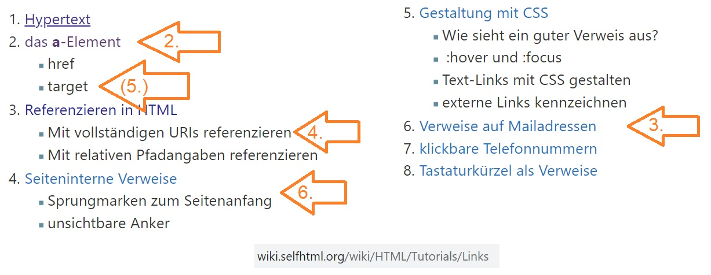
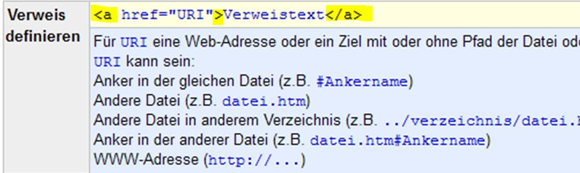
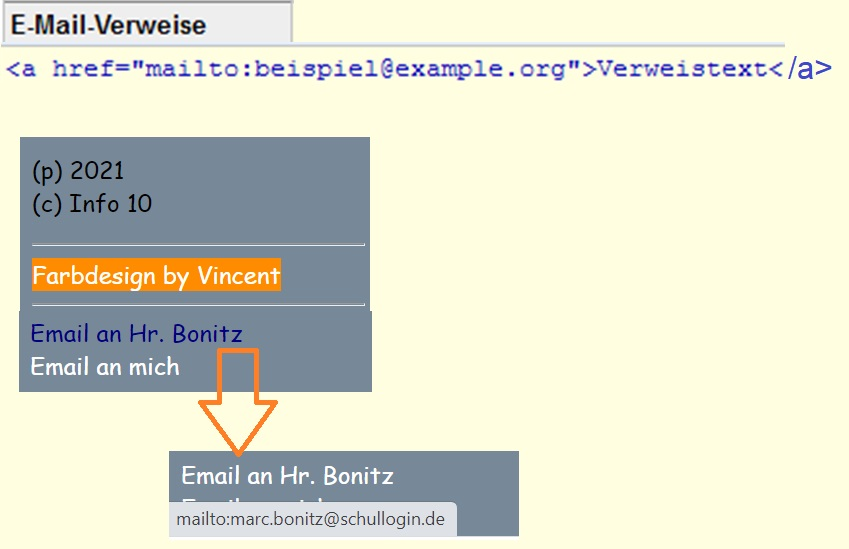
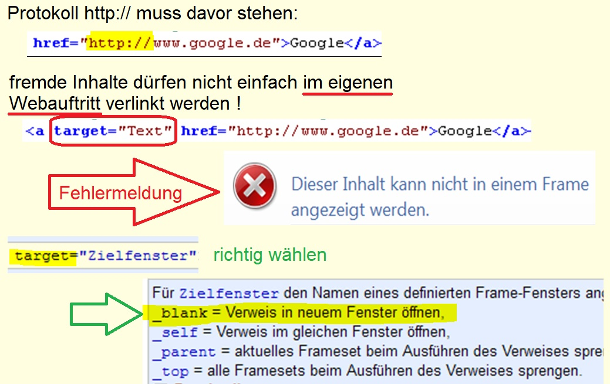
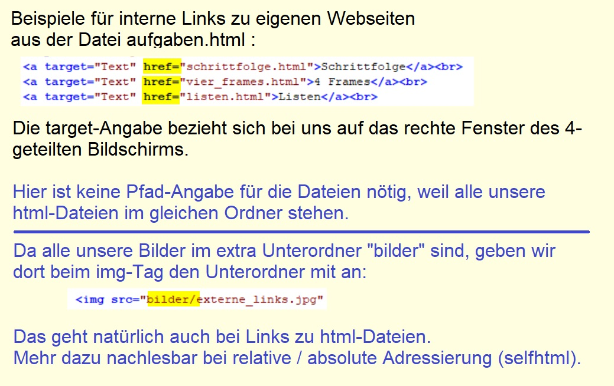
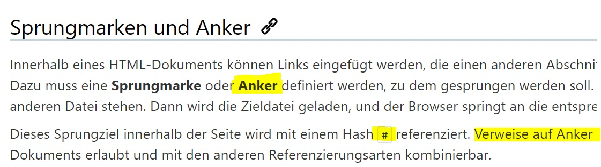

| 1. Vergleich Kurzfassung - SELFHTML |
|

|
- Bild = Selfhtml
- Pfeile mit Nr. =
meine Nummerierung auf dieser Seite
|
| 2. Aufbau von Links mit a-Tag |
|

|
- der Link-Text steht zwischen den a-Tags
- die href-Eigenschaft gibt das Ziel an ...
- ... mit ganz verschiedenen möglichen Werten
|
| 3. Email-Verweise (Aufgabe 5a) |
|

|
- mailto:
- wenn die Maus über den Link fährt
erscheint die Email-Adresse
unten links in der Statusleiste
- Aufgabe 5a - Datei aufgaben.html:
einfach übertragen des Mail-Links zu Hr. Bonitz
auf den Text "Email an mich"
|
| 4. externe Webseiten |
|

|
- Aufgabe 5b
(wieder in Datei aufgaben.html)
Link zu SELFHTML funktioniert richtig,
das Prinzip für "Google" übertragen
|
| 5. eigene Webseiten |
|

|
- Aufgabe 5c in 2 Schritten:
- 1) Deine 2 Dateien in den Ordner mit allen
html-Seiten kopieren (außerhalb von phase5)
- 2) Die Links hinzufügen für die Anzeige rechts =
siehe alle bereits funktionierenden Links
(natürlich wieder in der Datei aufgaben.html)
|
| 6. Sprungmarken (Anker) innerhalb einer html-Datei |
|

|
- um seitenintern zu springen, braucht es 2 Schritte:
- 1. Sprungziel als "Anker" definieren
- 2. beim Sprung in href-Eigenschaft mit # kennzeichnen
Diese gesamte Datei ist voller seiteninterner Sprünge:
- vom "Inhaltsverzeichnis" oben zu jedem Punkt und
- auch von jeder Tabellenüberschrift zurück nach oben
|